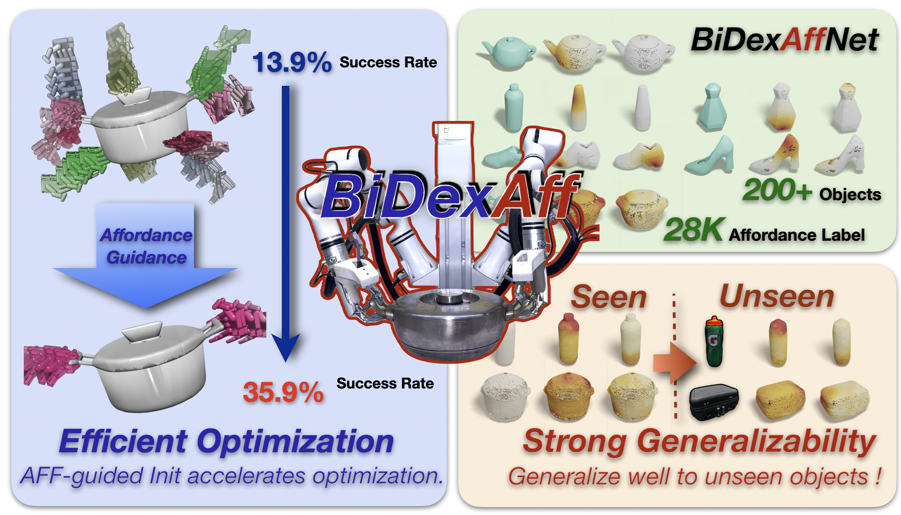
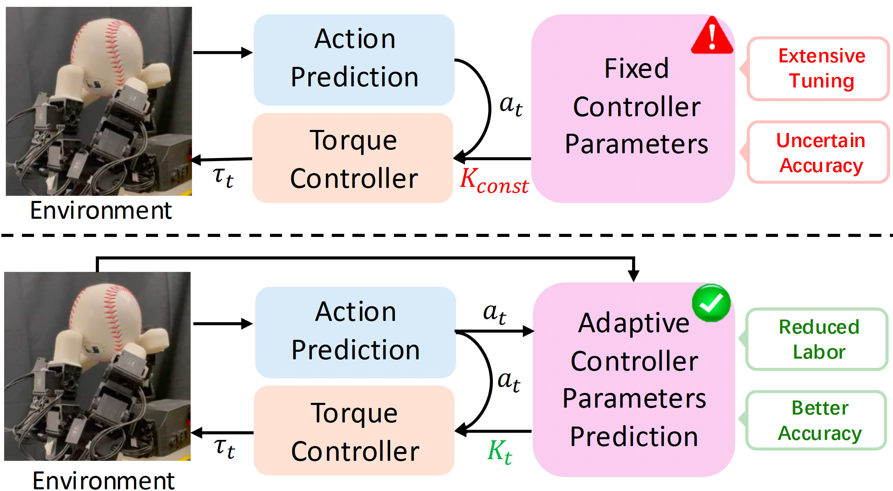
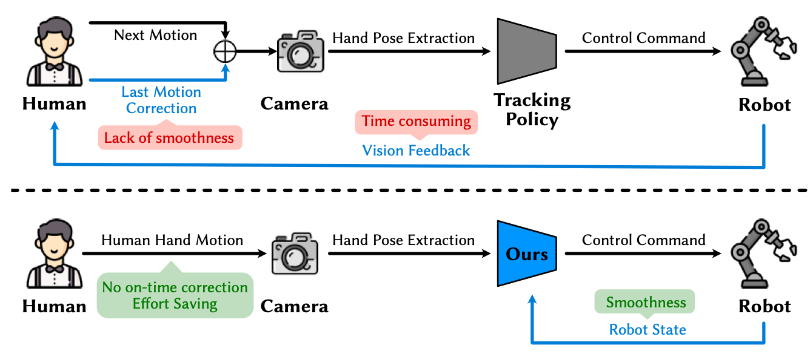
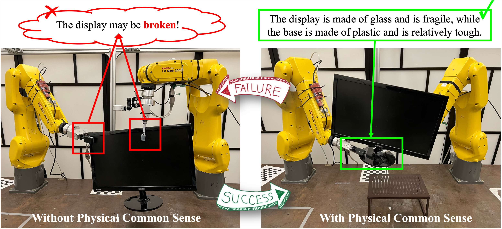
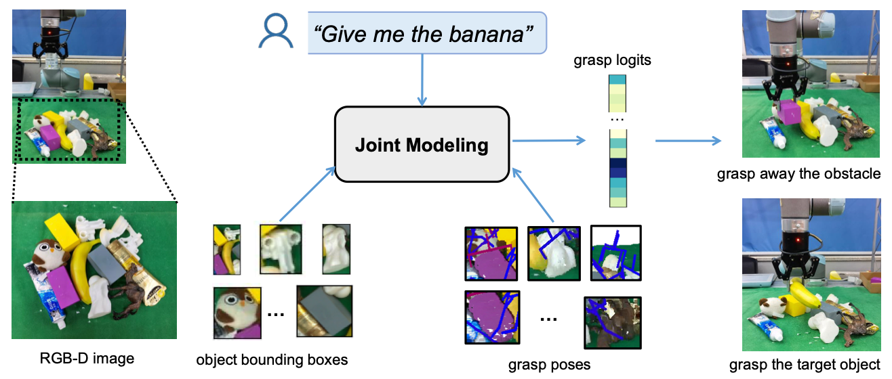

|
Shuqi Zhao (赵澍淇)
Hi! I am a third-year Ph.D. (Sep. 2023 - ) at UC Berkeley under the supervision of Prof. Masayoshi Tomizuka in the Mechanical Systems Control (MSC) Lab, which is affiliated with the Berkeley Artificial Intelligence Research (BAIR). During my graduate study, I am fortunate to have the opportunity as an intern at HRI, supervied by Dr. Rana Soltani Zarrin.
Prior to this, I obtained my B.Eng (Sep. 2019 - Jun. 2023) in Control Science and Engineering department from Zhejiang University with a major in automation a honor minor degree at Chu Kochen Honor College, where I was advised by Prof. Haojian Lu, Prof. Yue Wang, and Prof. Rong Xiong.
Furthermore, I'm fortunate to have the opportunity as an intern in CERN, supervised by Dr. Eloise Matheson and an visiting student in The Chinese University of Hong Kong, supervised by Prof. Yunhui Liu.
My research interests lie in robot learning, with a particular emphasis on dexterous manipultion such as learning from human demonstration and sim-to-real transfer.
I am seeking for reseacher internship opportunities in industry in 2026, please feel free to contact me!
Email /
CV /
Google Scholar /
Github /
LinkedIn
|
shuqi_zhao@berkeley.edu
|
|

|
BiDexAffordance: Learning Collaborative Affordances for Efficient Bimanual Dexterous Grasping
Peiqi Liu, Jingwen Li, Zeyuan Chen, Yue Chen, Shuqi Zhao, Yuanpei Chen, Chenfeng Xue, Masayoshi Tomizuka, Wei Zhan, Ruihai Wu
Under Review
|
|

|
DexCtrl: Towards Sim-to-Real Dexterity with Adaptive Controller Learning
Shuqi Zhao, Ke Yang, Yuxin Chen, Chenran Li, Yichen Xie, Xiang Zhang, Changhao Wang, Masayoshi Tomizuka
Under Review
|
|

|
DexH2R: Task-oriented Dexterous Manipulation from Human to Robots
Shuqi Zhao*, Xinghao Zhu*, Yuxin Chen, Chenran Li, Yichen Xie, Xiang Zhang, Mingyu Ding, Masayoshi Tomizuka
IEEE/ASME Transactions on Mechatronics(TMech)
|
|

|
PhyGrasp: Generalizing Robotic Grasping with Physics-informed Large Multimodal Models
Dingkun Guo*, Yuqi Xiang* Shuqi Zhao, Xinghao Zhu, Masayoshi Tomizuka, Mingyu Ding, Wei Zhan
IROS 2025
|
|

|
A Joint Modeling of Vision-Language-Action for Target-oriented Grasping in Clutter
Kechun Xu, Shuqi Zhao, Zhongxiang Zhou, Zizhang Li, Huaijin Pi, Yue Wang, Rong Xiong
ICRA 2023
|
- Departmental First Year Doctoral Fellowships awarded by Department of Mechanical Engineering in University of California, Berkeley, 2023.
- Student Scholarship awarded by Zhejiang Univerity, 2020 and 2022.
|
{kind=link}